Vertical grooved panels
Continuous texture. A capped dado.
Sheet cutouts, radiator brackets, pipes and sockets need careful fitting.
Hallway views
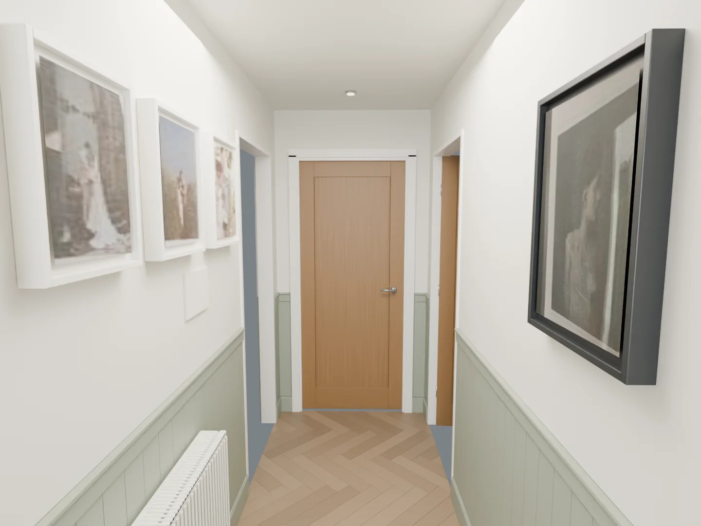
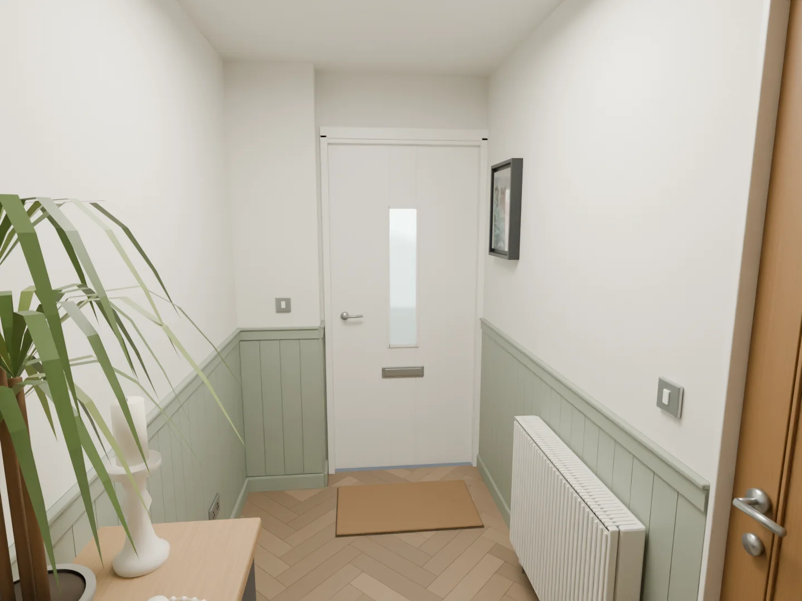
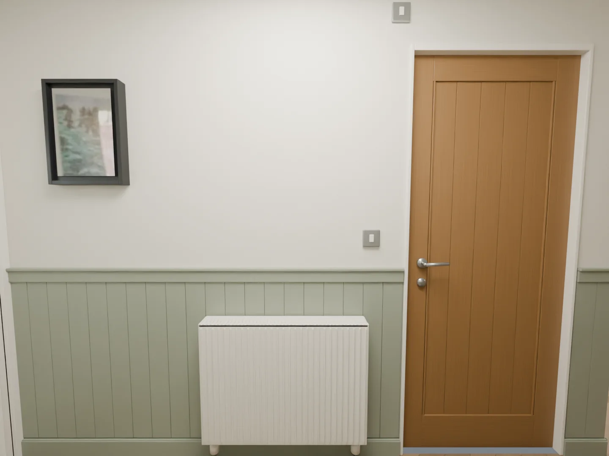
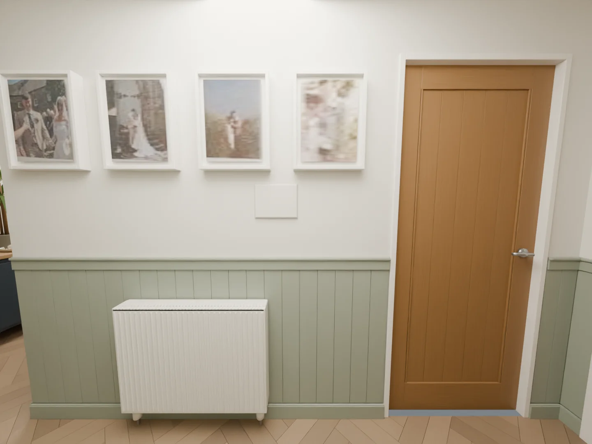
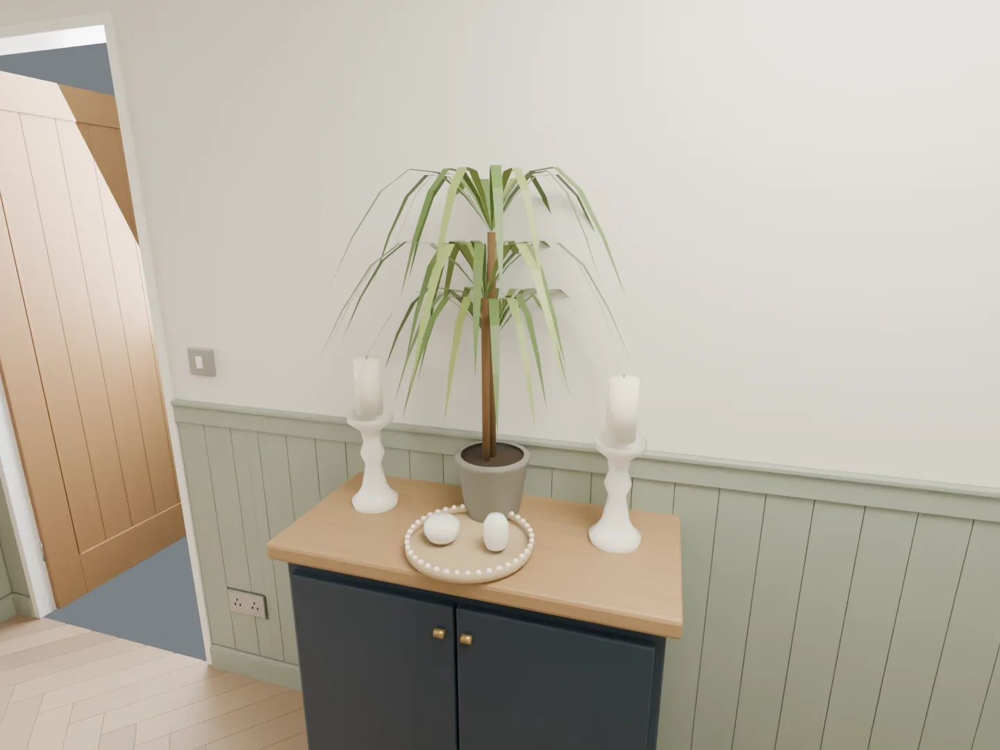
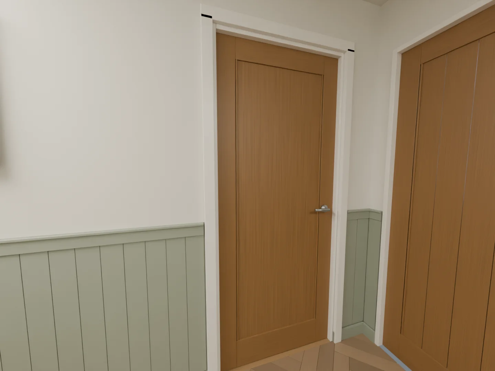
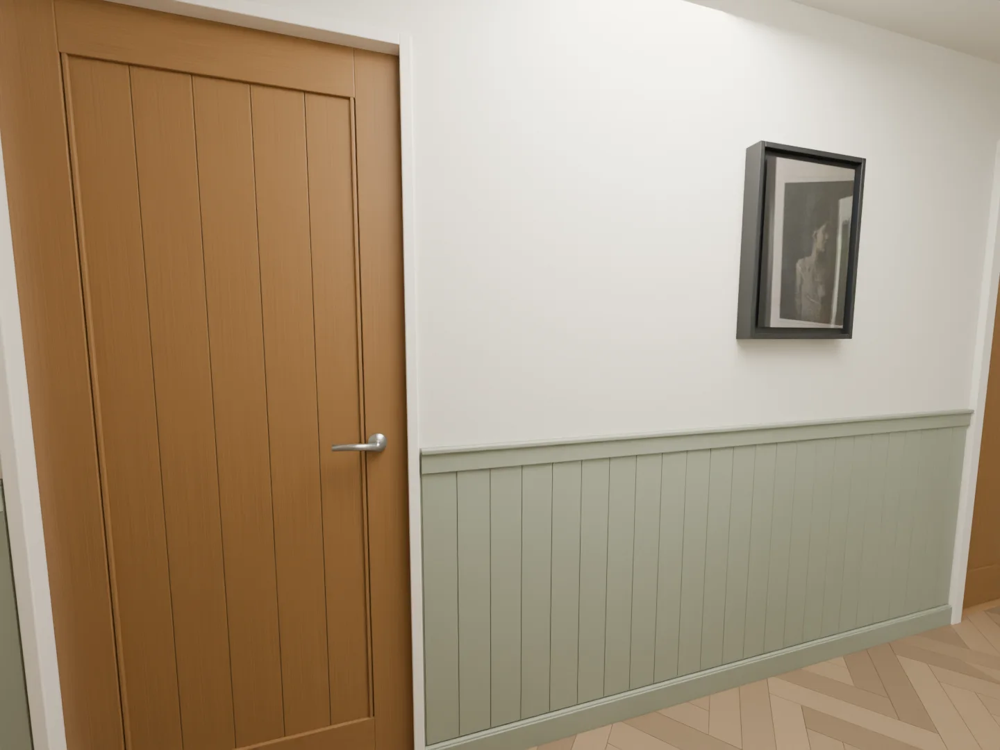
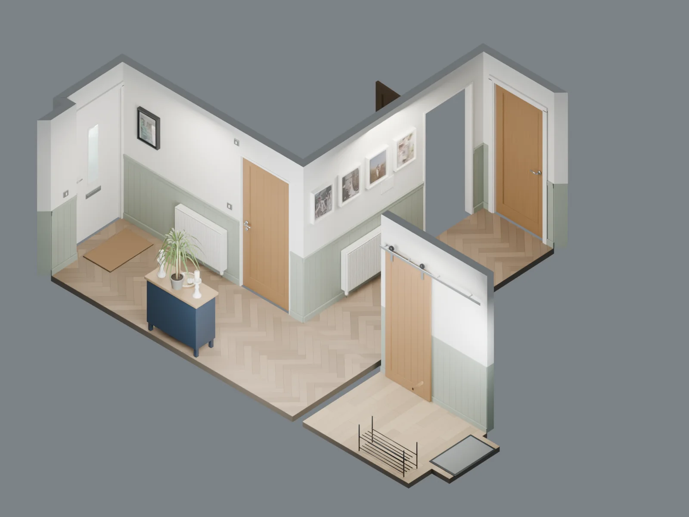
Entrance views
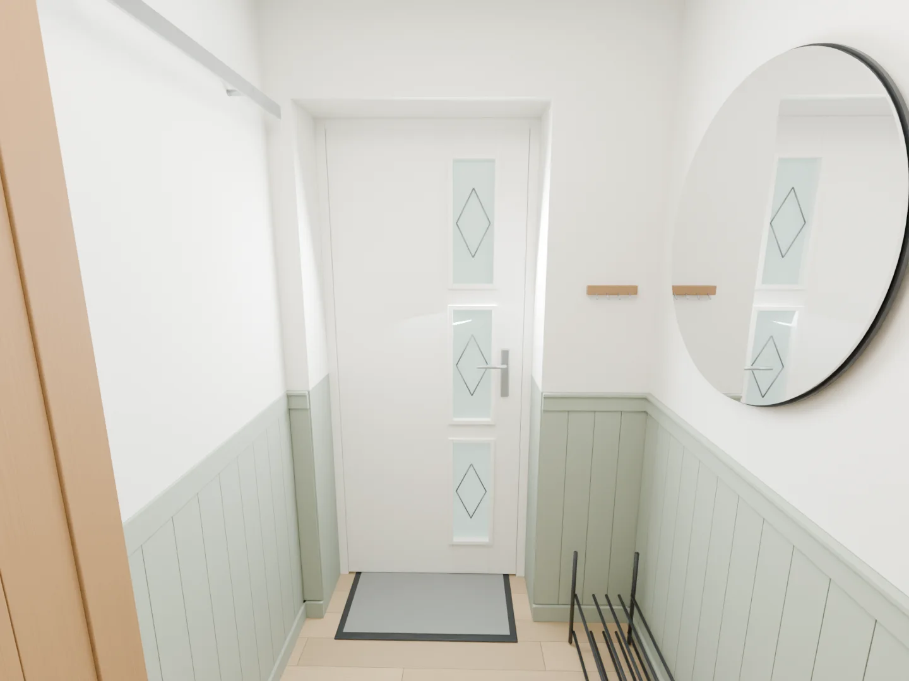
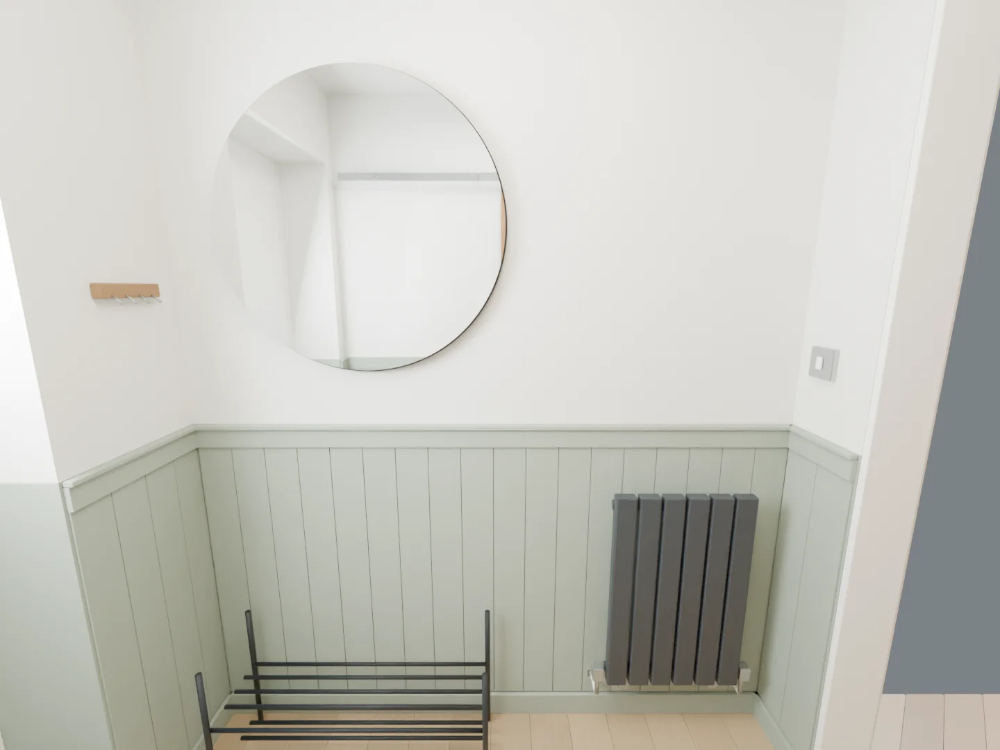
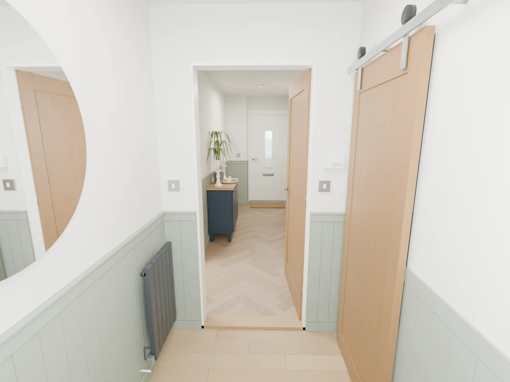
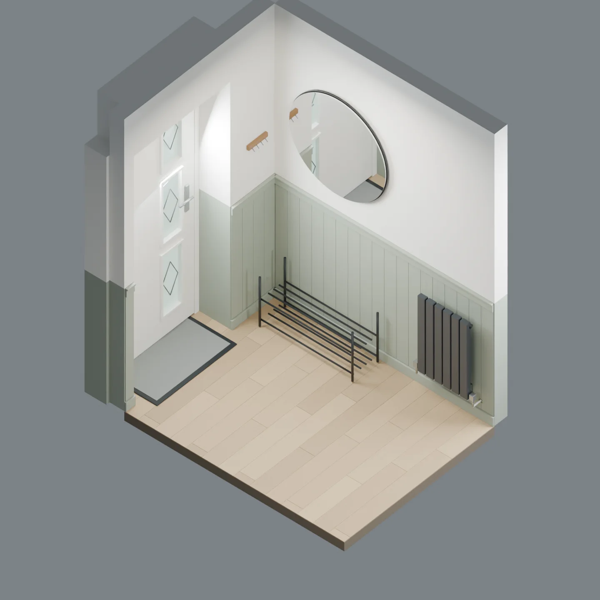

The entrance floor is 25 mm lower. Its 1025 mm dado meets the hallway dado at the same physical height. The connecting wall is 140 mm thick, excluding trim.
What you need
Grooved MDF sheets cover the lower wall. The vertical lines give a consistent finish, but fitting around services takes more work.
| Material / section (mm) | Buy | Allowance |
|---|---|---|
| Grooved MDF, 6 mm thick | 7 × 2440 × 1220 mm sheets | 26 panel blanks; 12.995 m² gross. |
| Standard flat cap, 55 high × 14 deep | 8 × 2440 mm lengths | 14.290 m installed; includes one spare length. |
| Standard cap lip, 15 high × 23 deep | 8 × 2440 mm lengths | 14.290 m installed; includes one spare length. |
| Barn-wall flat cap, 70 high × 9 deep | 1 × 2440 mm length | Replaces both standard cap parts on E1; 1.085 m installed. |
Paint, adhesive and tools
| Supply | Planning allowance |
|---|---|
| Construction adhesive, 290–310 ml | 14–17 cartridges |
| Decorators caulk | 4 cartridges |
| Fine filler | 1 small tub |
| MDF / timber primer | 3 litres |
| Coloured topcoat, two coats | About 4.1 litres |
| Other supplies | Abrasives, masking tape, dust sheets and suitable temporary fixings |
Coverage depends on the product and wall condition. The paint allowance uses about 17 m², two coats at 10 m² per litre and 20% extra. Use compatible wall and trim finishes. Tools include a tape, level, square, saw, mitre guide, adhesive gun and sanding tools; grooved sheets also need a guided saw and cutout templates.
Lengths and cuts
All dimensions below are in millimetres. Nominal sizes are intended finished sizes before corner details and site variation. Check the wall ends and profile samples before making final cuts.
| Panel | Width (mm) | Height (mm) |
|---|---|---|
| W2a-P1 | 1,000 | 835 |
| W2a-P2 | 1,000 | 835 |
| W2b-P1 | 220 | 835 |
| W3a-P1 | 1,100 | 835 |
| W3a-P2 | 1,045 | 835 |
| W3b-P1 | 190 | 835 |
| W4a-P1 | 107.5 | 835 |
| W4b-P1 | 107.5 | 835 |
| W5a-P1 | 190 | 835 |
| W5b-P1 | 1,200 | 835 |
| W5b-P2 | 1,180 | 835 |
| W5c-P1 | 235 | 835 |
| W6a-P1 | 110 | 835 |
| W6b-P1 | 1,100 | 835 |
| W6b-P2 | 1,100 | 835 |
| W6b-P3 | 920 | 835 |
| W7a-P1 | 460 | 835 |
| W8a-P1 | 180 | 835 |
| E1a-P1 | 135 | 875 |
| E1b-P1 | 950 | 875 |
| E2a-P1 | 90 | 875 |
| E2b-P1 | 420 | 875 |
| E3a-P1 | 1,000 | 875 |
| E3a-P2 | 800 | 875 |
| E4a-P1 | 260 | 875 |
| E4b-P1 | 275 | 875 |
Wall key and all dado lengths 15.375 m total
All three options use these 20 wall-face runs across both rooms. Apply the schedule once for each continuous rail or cap part. W1 is the rear door and has no rail.


| Run | Wall section | Length (mm) |
|---|---|---|
| W2a | Bathroom wall | 2,000 |
| W2b | Bathroom wall | 220 |
| W3a | Wedding-photo wall | 2,145 |
| W3b | Wedding-photo wall | 190 |
| W4a | Storage wall | 107.5 |
| W4b | Storage wall | 107.5 |
| W5a | Entrance and spare-bedroom wall | 190 |
| W5b | Entrance and spare-bedroom wall | 2,380 |
| W5c | Entrance and spare-bedroom wall | 235 |
| W6a | Kitchen and cabinet wall | 110 |
| W6b | Kitchen and cabinet wall | 3,120 |
| W7a | Rear boxing face | 460 |
| W8a | Rear recess return | 180 |
| E1a | Entrance barn wall | 135 |
| E1b | Entrance barn wall | 950 |
| E2a | Entrance front wall | 90 |
| E2b | Entrance front wall | 420 |
| E3a | Entrance mirror wall | 1,800 |
| E4a | Entrance connecting wall | 260 |
| E4b | Entrance connecting wall | 275 |
W4a and W4b assume the 990 mm storage frame is centred in the 1205 mm end wall. The 3120 mm W6b run needs a joint when using 2440 mm stock; allow two 1560 mm nominal pieces.
Stock cutting schedule Rough blanks in mm
These blanks include trimming allowance. They are not the final cut sizes. Keep every piece labelled. The schedule allows 3 mm saw loss per cut.
| Stock / row | Blank labels and lengths (mm) | Left over (mm) |
|---|---|---|
| 1 | W5b-P1: 1,205 | 7 |
| 2 | W5b-P2: 1,185 | 27 |
| 3 | W3a-P1: 1,105 + E2a-P1: 95 | 9 |
| 4 | W6b-P1: 1,105 | 107 |
| 5 | W6b-P2: 1,105 | 107 |
| 6 | W3a-P2: 1,050 + E1a-P1: 140 | 19 |
| 7 | W2a-P1: 1,005 + W3b-P1: 195 | 9 |
| 8 | W2a-P2: 1,005 + W5a-P1: 195 | 9 |
| 9 | E3a-P1: 1,005 + W8a-P1: 185 | 19 |
| 10 | E1b-P1: 955 + W5c-P1: 240 | 14 |
| 11 | W6b-P3: 925 + E4b-P1: 280 | 4 |
| 12 | E3a-P2: 805 + E4a-P1: 265 + W6a-P1: 115 | 21 |
| 13 | W7a-P1: 465 + E2b-P1: 425 + W2b-P1: 225 | 91 |
| 14 | W4a-P1: 113 + W4b-P1: 113 | 983 |
| Stock / row | Blank labels and lengths (mm) | Left over (mm) |
|---|---|---|
| 1 | W5b: 2,410 | 17 |
| 2 | W3a: 2,175 + W3b: 220 | 29 |
| 3 | W2a: 2,030 + E4b: 305 | 89 |
| 4 | E3a: 1,830 + W7a: 490 | 104 |
| 5 | W6b-1: 1,590 + E2b: 450 + E4a: 290 | 91 |
| 6 | W6b-2: 1,590 + W5c: 265 + W2b: 250 + W5a: 220 | 93 |
| 7 | W8a: 210 + W6a: 140 + W4a: 138 + W4b: 138 + E2a: 120 | 1,669 |
| Stock / row | Blank labels and lengths (mm) | Left over (mm) |
|---|---|---|
| 1 | E1b: 980 + E1a: 165 | 1,279 |
Each sheet supplies two rows. Hallway-only rows are 840 mm rough; rows with an entrance panel are 880 mm rough. Finish each labelled panel to its own 835 or 875 mm height. Width blanks allow 5 mm extra, plus saw loss and 5 mm stock-edge allowance. The PDF shows all seven sheet layouts.
Linear MDF and mould blanks allow 30 mm extra per piece and 10 mm stock-end trimming. The 2400 mm cap schedule allows 10 mm extra per piece and only 5 mm stock-end trimming. Check stock lengths first and use the spare if needed. Corner projections and actual wall angles set the final end cuts.
Fit it to the room
- Hallway panels run from 95 to 930 mm above floor. Entrance panels run from 80 to 955 mm. Standard caps add 55 mm plus a 15 mm lip.
- E1 uses one 70 mm-high, 9 mm-deep flat cap. Fit it directly to the wall above the panels; do not stack it over the 6 mm sheet.
- Order grooves parallel to the 2440 mm sheet direction. Do not rotate offcuts by 90 degrees. Restart the groove layout at door openings.
- Confirm usable sheet width. A 1200 mm panel cannot come from a 1200 mm sheet with trimming allowance.
- Template pipe, bracket and socket cutouts on site. Keep valve and wall-box access clear. Use suitable trade support for radiator or faceplate removal.
- Seven sheets fit the layout. No extra spare sheet is included. Allow extra material if groove alignment or a failed cutout requires it.